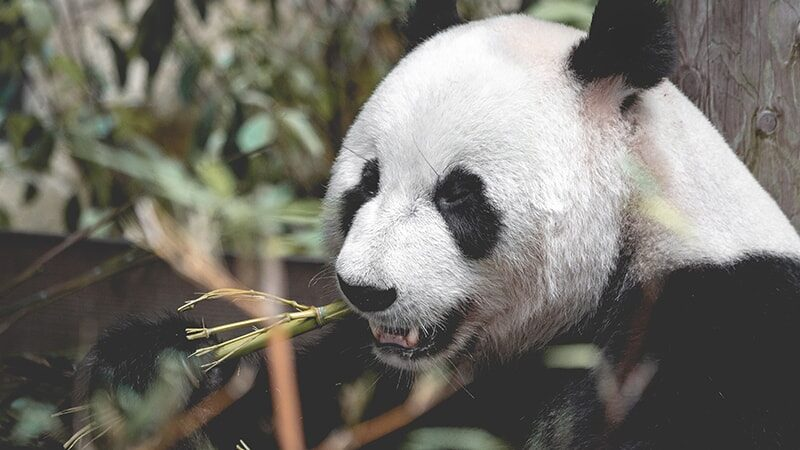

- Habitat Panda
Habitat dari panda jantan dan panda betina berbeda. Panda betina lebih menyukai hutan konifer atau pohon jarum dan hutan yang terdiri dari berbagai jenis pohon di daerah lereng-lereng gunung yang tinggi, sementara panda jantan berkeliaran di wilayah yang lebih luas.
Para ilmuwan mengatakan panda betina memilih daerah-daerah itu karena memberikan perlindungan yang lebih baik ketika melahirkan dan hutan-hutan bambu yang lebat bisa menjadi tempat bersembunyi bagi bayi-bayi panda. Temuan ini akan membantu mengembangkan strategi dalam upaya melestarikan panda liar ketika membebaskan mereka di alam bebas.
- Makanan Panda
Seperti yang sudah dijelaskan diatas, Panda termasuk dalam anggota keluarga beruang, namun hewan ini berbeda dengan beruang lainnya. Biasanya makanan beruang adalah daging, tetapi panda justru gemar makan bambu.
Tahukah teman-teman? Ternyata panda diberi makan sebanyak empat kali dalam sehari, lo. Sekitar 99 persen makanan panda adalah bambu. Biasanya, panda makan 30 kilogram bambu setiap hari. Sedangkan sisanya, panda akan diberi makan apel, pir, wortel, dan juga kue panda.Kue panda ini terbuat dari campuran tepung jagung, tepung kedelai, telur, dan minyak.
- Kebiasaan Panda
Selain suka makan, panda juga merupakan hewan yang suka tidur. Mereka menghabiskan sepuluh jam sehari hanya untuk tidur. Selebihnya, waktu mereka dalam sehari digunakan untuk makan dan bermain. Setelah seharian bermain dan makan banyak bambu, mereka akan beristirahat. Meskipun sama besarnya dengan beruang, panda punya kebiasaan yang beda dengan sahabatnya itu. Panda nggak berhibernasi, karena makanan pokok panda tersedia sepanjang tahun.
- Filosofi Panda
Masyarakat China sendiri memang percaya bahwa Yin dan Yang sebagai pembawa kedamaian dan keselarasan dalam keseimbangan hadir dalam sifat panda yang lembut. Nggak cuma itu, panda juga dinilai menjadi simbol perdamaian. Hewan ini dapat mencegah peperangan atau gencatan senjata yang terjadi.
- Bagian Tubuh Panda

Seluruh tubuh panda dipenuhi dengan rambut halus. Panda memiliki tubuh yang besar. Pada bagian badan panda umumnya ditumbuhi rambut halus berwarna putih, sementara pada bagian tangan dan kaki, bulu panda berwarna hitam. Panda adalah hewan mamalia yang dikenal sebagai pemakan daun bambu.
Ternyata warna bulu panda tersebut bisa dimanfaatkan sesuai fungsinya masing-masing, lo! Hal ini disampaikan oleh sekelompok peneliti dari California, bahwa ternyata bulu putih digunakan panda untuk menyembunyikan diri di tempat bersalju. Sementara warna bulu yang hitam bisa digunakan untuk bersembunyi di lingkungan gelap.
Mengapa panda kadang bersembunyi? Sebab adanya beberapa hewan lain yang bisa memangsa mereka, teman-teman.
{kind=link}
{kind=link}
{kind=link}